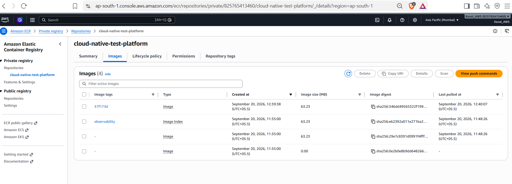
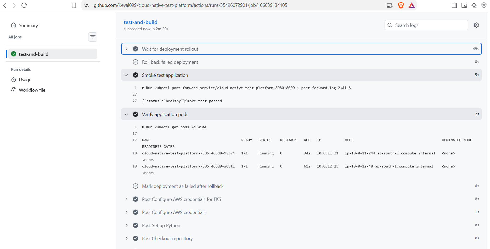
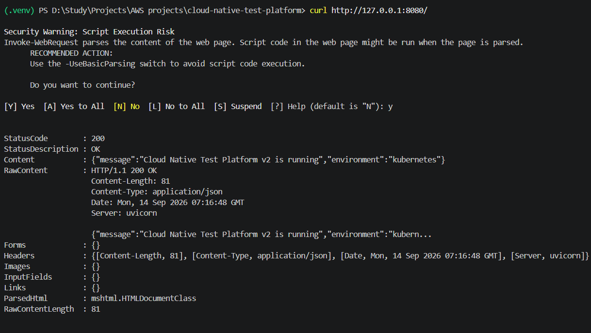
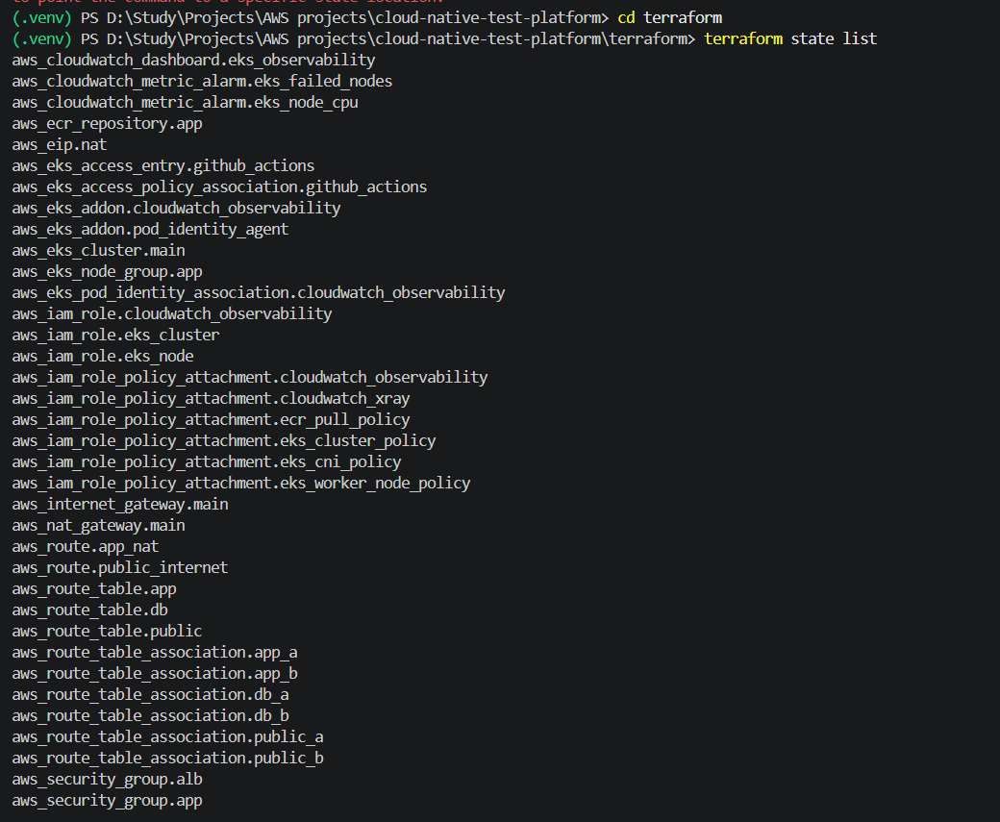
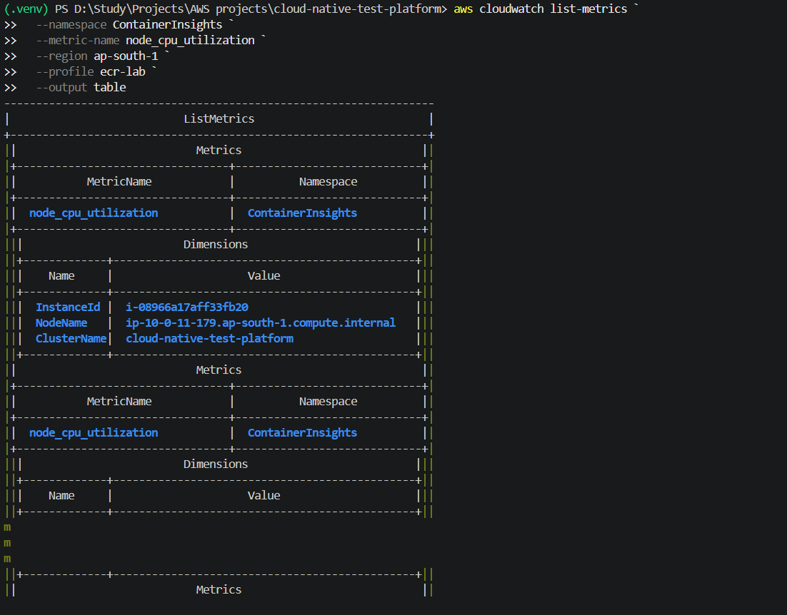
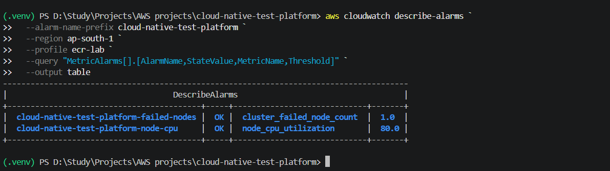

From commit to a monitored workload on AWS.
A hands-on cloud-native platform built with FastAPI, Docker, GitHub Actions, Amazon ECR, Amazon EKS, Terraform and CloudWatch — including automated deployment, rollback, logging, metrics and alarms.
Architecture
Infrastructure is defined with Terraform, delivery is automated with GitHub Actions, and the workload runs on Amazon EKS.
Developer
│
▼
GitHub ──────────────── Pull Request / Merge
│
▼
GitHub Actions
├── Pytest
├── Docker build
├── Trivy scan
├── GitHub OIDC → AWS IAM
└── Push image
│
▼
Amazon ECR
│
▼
Amazon EKS
┌────┴────┐
│ │
Pod 1 Pod 2
│ │
└────┬────┘
│
Kubernetes Service
│
▼
FastAPI application
│
┌──────┴────────┐
│ │
Logs Metrics
│ │
▼ ▼
CloudWatch Logs Container Insights
│ │
└───────┬───────┘
▼
Dashboard + AlarmsTechnology stack
Focused on practical cloud and DevOps fundamentals rather than deep specialization in one platform.
Application
Python, FastAPI, Uvicorn, Pytest and HTTPX.
Containers
Docker image creation, local validation, ECR publishing and Trivy scanning.
AWS infrastructure
VPC networking, IAM, NAT, security groups, EKS and managed node groups.
Infrastructure as Code
Terraform manages networking, EKS, ECR, IAM, access, Pod Identity and observability.
CI/CD delivery path
Every main-branch deployment is tied to a Git commit SHA and passes automated validation before reaching EKS.
Observability
Amazon CloudWatch Container Insights collects workload logs and metrics. The project also includes a dashboard and operational alarms.
Implementation evidence
Selected screenshots from the project evidence record. They show the system being built, deployed, tested and observed.











What this project demonstrates
A concise summary of the engineering outcomes.
Infrastructure as Code
Terraform manages the cloud infrastructure and makes the environment reproducible.
Secure CI/CD
GitHub OIDC provides short-lived AWS credentials and separates ECR and EKS deployment permissions.
Operational recovery
Deployment failure was intentionally tested and automatic rollback was verified.
Observability
Logs, metrics, dashboards and alarms provide a practical monitoring baseline for the workload.